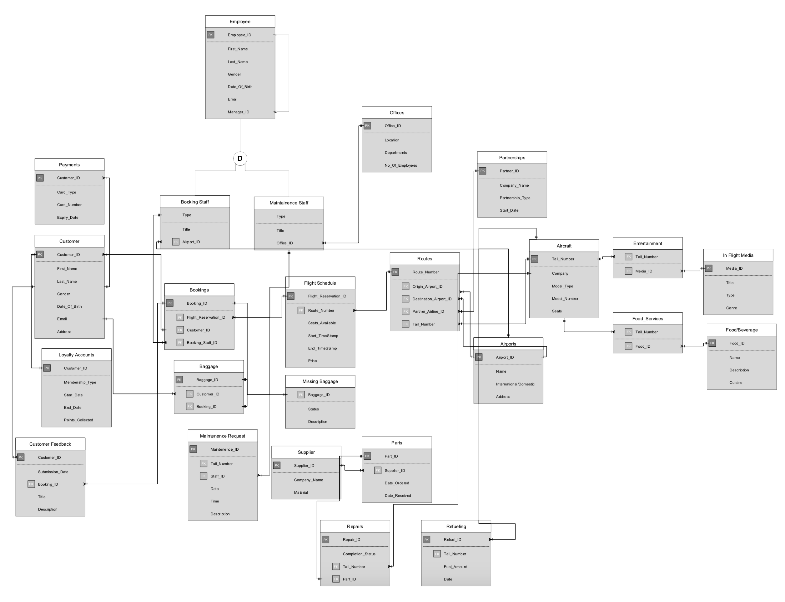

PROJECT
Airline Database Project
December 07 2018

TOOLS USED
- Visual Basic
- Adobe Photoshop and Illustrator (Image Assets)
- Adobe Xd (Wireframing)
Introduction To Database Systems
BUS-S307: Data Management was one of my first Information Systems major classes. The class began with an introduction to database environments and it's development process.
The first half of the class was devoted to learning how to structure a database. We were taught how to create Enhanced Entity-Relationship Models. We also learned logical database design and the relational model by systematically structuring data. Assignments and projects revolved around designing a physical database model and normalizing the relation tables to the 3rd Normal Form.
The latter half of the class was spent learning how to write SQL code in the Oracle database environment. It started with basic create, read, update and delete (CRUD) operations where we learned how to create and alter tables and it's fields. Later, we dove deeper into SQL development by learning how to create complex queries to retrieve data from the database. The class ended with a final group project.
Final Group Project
The brief for the final project instructed teams to design a database for a business or office. We began the project by assuming the role of a designer and brain-stormed all the features, and processes that our team would like to include in our application as well as the determine the end-user of the software. Our team decided that we would create a database system for an airline (Air America). We also agreed that the software application would be used by the ground staff at different airports to search customer bookings, flight schedule, missing baggages and place aircraft maintenance requests.
Software Development
The first step to create the application was to create a detailed ER model of the database we would be pulling and posting data from. Initially, it was a huge challenge to decide what entities should be a part of the diagram. Slowly, our team learned that it would be easier to create small user stories which would guide us through the process of retrieving or posting information. For example, to see the flight schedule, the ground staff attendant would either have to enter a date and/or a unique flight number to see the schedule of the flights taking off from a given airport. Once the user story was decided upon, we then designed an ER model that would help us get that data from the database. We continued this process for the rest of the features of the application. Here is the final ER Model that our team created in order to create our software: 
Entity-Relationship Model Of The Software
Once the the Entity-Relationship model was finalized, we used the the diagram to build a logical design. Our group created a relational model that was normalized to the 3rd Normal Form so that our program could operate efficiently without sacrificing performance.
The next step was to create a dummy database on Microsoft Access with dummy data to check if something wasn't working. We also created the queries needed to retrieve data from the database. Once everything was working, we created a wireframe of the user-interface for our application. All the image assets were created using the Adobe Creative Cloud of software. Finally, we programmed a Visual Basic Application in Visual Studio that incorporated all the features that we had planned for. Here are some screenshots from the live application.
Initial prototype of the application

Log-In Page for airline ground staff

Dashboard of the application

Customer Roster Form

Customer Roster Report

Flight schedule form

Flight schedule report

Missing baggage form

Missing baggage report

Maintenance request form